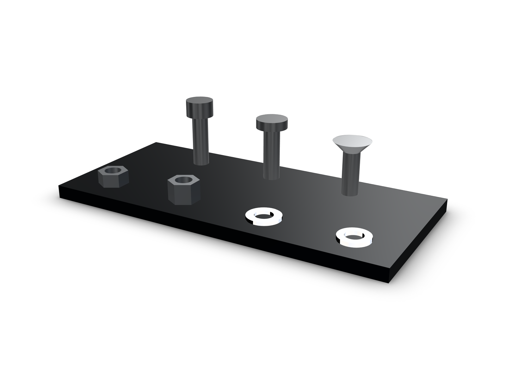

Blog · · Andrii Shylenko
Standard fasteners from one table with lib.part and lib.stack
kernelCAD ships a table of ISO metric fasteners. lib.part builds one part from it, and lib.stack builds a bolted joint around a grip thickness. Both return envelope solids, a head plus a shank, and the browser builds them in memory.
examples/parts/bolt-stack.kcad.ts. Drag to turn it.What the table stocks
socket-head-cap-screw(ISO 4762): M2, M2.5, M3, M4, M5, M6button-head-cap-screw(ISO 7380): M3, M4, M5flat-head-countersunk(ISO 10642): M3, M4, M5hex-nut(ISO 4032): M2, M2.5, M3, M4, M5, M6lock-nut(DIN 985): M3, M4, M5flat-washer(ISO 7089): M2, M3, M4, M5, M6lock-washer(DIN 127B): M3, M4, M5
Screws also take a stocked length: socket head 4 to 50 mm, button head 5 to 25 mm, countersunk 6 to 25 mm. An unknown family, thread or length fails with a diagnostic that names the stocked values.

The geometry is an envelope. A socket head is its cylinder, a countersunk head is the seated ISO 10642 frustum that fills its countersink, and the lock washer is a plain annulus without the split. That covers fit checks and assembly layout. It is not a threaded part, and it makes no claim about thread contact.
Place one part
lib.part({ family, thread, lengthMm }) resolves the row and returns the solid. Screws need a stocked length; nuts and washers take only a thread.
const nut = await lib.part({ family: 'hex-nut', thread: 'M5' });
const screw = await lib.part({ family: 'socket-head-cap-screw', thread: 'M5', lengthMm: 16 });
const pair = assembly('pair');
pair.part('screw', screw);
pair.part('nut', nut.translate(0, 0, -20));
return pair.model();The resolved ids are the catalog ids (iso-4762-m5x16 and iso-4032-m5 above), so lib.part resolves the same record as lib.standard.boltSHCS. lib.fetchPart, lib.findPart and lib.standard.* keep their behavior.
On a host with the catalog on disk, the STEP for that id is loaded instead of the in-memory envelope. The committed STEPs are exported from this same table, so both doors lead to the same geometry. To override records, point KERNELCAD_PARTS_DIR at a directory with an index.json, or place one in ~/.kernelcad/parts. Those records win over the generated catalog.
The stack, in one call
lib.stack({ thread, gripMm, mode }) returns the chosen lengthMm and the members. Each member is positioned against a seat at z = 0, the grip's top face.
mode: 'screw'places the screw alone. The length is the shortest stocked one at or above the grip.mode: 'bolt'adds a flat washer under the head, and a flat washer plus a hex nut on the back. The length is the shortest stocked one at or above grip + washer + nut.
const stack = await lib.stack({ thread: 'M5', gripMm: 12, mode: 'bolt' });
const placed = assembly('stack');
placed.part('screw', stack.screw);
placed.part('head-washer', stack.headWasher!);
placed.part('tail-washer', stack.tailWasher!);
placed.part('nut', stack.nut!);
return placed.model();For the 12 mm grip in the example the sum is 17 mm and the shortest stocked socket-head length at or above it is 18 mm. The members come back placed: washer on the seat, screw head above it, tail washer and nut below the grip.


The examples/parts/bolt-stack.kcad.ts source places the stack like this:
const seat = lift + gripMm;
const stack = await lib.stack({ thread: 'M5', gripMm, mode: 'bolt' });Limits and checks
Envelopes carry no thread, so nothing here proves thread contact, engagement, strength, torque or preload. The committed STEP files and the in-memory envelope come from the same table and agree; neither is a strength model.
examples/parts/verify.mts re-evaluates both examples and writes docs/demos/standard-parts/geometry-evidence.json: per-part bounds and volumes, pairwise interference (zero positive-volume overlaps), and the source hashes. The two examples evaluate with 0 diagnostics: fastener-lineup.kcad.ts reports 17 features and bolt-stack.kcad.ts reports 15.
Reproduce
From a repository checkout:
npx tsx examples/parts/verify.mtsThe script prints a JSON summary and rewrites the evidence file. The demo bundle, its renders and the review video are in docs/demos/standard-parts/.